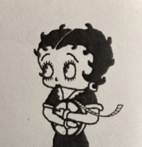

Public records & FOIA
Freedom of information, documents and data journalism.
3 films · 14 sessions · 47 people
Often together with: Whistleblowers & leaksPress freedom & journalists at riskLegal & safety for reportersWar, conflict & the militaryArchives & historySurveillance & privacy
Films
 Rehearsals for a RevolutionPegah Ahangarani2026 · 95 min
Rehearsals for a RevolutionPegah Ahangarani2026 · 95 min 3212 Un-RedactedBrian Epstein, James Gordon Meek, Andrew Fredericks2021 · 100 min
3212 Un-RedactedBrian Epstein, James Gordon Meek, Andrew Fredericks2021 · 100 min MLK/FBISam Pollard2020 · 104 min
MLK/FBISam Pollard2020 · 104 min
Sessions
- 2026 · Fri Nov 6 · 12:15pmPanelFaked, Erased, Distorted: Does the Record Matter?Swapneel Mehta, Yvonne Ng, Sam Benstead, Mark Graham, Sig Libowitz
- 2026 · Sat Nov 7 · 10:00amWorkshopThe People’s Archive: What’s In It, How to Use ItBonnie Rowan, Marisa Fox, Doug Block, Lisa Warwick
- 2026 · Fri Nov 6 · 10:35amPanelYour City Your StoryLois Nembhard, Sonam Vashi, George Kevin Jordan, Noah Kincade, Rachel Mason
- 2025 · Sat Nov 1 · 11:30 AMWorkshopWorkshop: Pro Bono Legal Clinic for Investigative StorytellersAzeezat Adeleke, Chelsea Kelly, Eric Feder, Sig Libowitz, Mary Inman
- 2023 · Sat Nov 4 · 2:15 PMWorkshopRevealing Records for FilmmakersNate Jones
- 2022 · Sat Oct 15 · 10:00 AMWorkshop · DX²Obtaining Audio & Visual Materials Through Public Records RequestsGunita Singh, Ken Klippenstein, Lauren Feeney
- 2021 · Thu Oct 14 · 11:15amPanelPro Bono Legal ClinicLoralee Sundra, Diana Palacios, Chuck Tobin, Theodore Frank, Sarah Matthews
- 2019 · Sat Oct 12 · 10:00 AMWorkshopFOIA Workshop for Journalists and FilmmakersKatie Townsend, Gunita Singh
- 2019 · Sat Oct 12 · 10:00 AMWorkshopPro Bono Legal ClinicAlexia Bedat, Edward Baker, Lisa Zycherman, Theodore Frank
- 2018 · Sat Oct 13 · 10:15 AMEventPro Bono Legal ClinicTheodore Frank, Edward Klaris, Sarah Matthews, Lisa Zycherman
- 2018 · Sat Oct 13 · 11:45 AMWorkshopWorkshop: Research DeskJohanna Hamilton, Shola Lynch, Margot Williams
- 2017 · Fri Oct 20 · 9:30 AMConversationOpening Conversation: Taking FOIA to FilmAssia Boundaoui, Nina Gilden Seavey, Topher Sanders
- 2017 · Sat Oct 21 · 9:30 AMEventPro Bono Legal Clinic for Visual StorytellersTheodore Frank, Laura Handman, Ed Klaris, Jesselyn Radack, Katie Townsend
- 2016 · Thu Oct 6 · 10:30 AMWorkshopFact Checking WorkshopPenny Lane
People most involved
 Theodore FrankPanelist, festival team, workshop leader · 7 editions, 2017–2025Arnold & Porter Kaye Scholer (retired partner)
Theodore FrankPanelist, festival team, workshop leader · 7 editions, 2017–2025Arnold & Porter Kaye Scholer (retired partner) Katie TownsendPanelist, workshop leader, moderator · 6 editions, 2015–2023Reporters Committee for Freedom of the Press
Katie TownsendPanelist, workshop leader, moderator · 6 editions, 2015–2023Reporters Committee for Freedom of the Press
 Lisa ZychermanPanelist, workshop leader · 4 editions, 2018–2023Reporters Committee for Freedom of the Press
Lisa ZychermanPanelist, workshop leader · 4 editions, 2018–2023Reporters Committee for Freedom of the Press Gunita SinghWorkshop leader, panelist · 2 editions, 2019–2022Reporters Committee for Freedom of the Press
Gunita SinghWorkshop leader, panelist · 2 editions, 2019–2022Reporters Committee for Freedom of the Press Sig LibowitzModerator, panelist, workshop leader · 3 editions, 2024–2026JHU AAP Graduate Film and Media Program
Sig LibowitzModerator, panelist, workshop leader · 3 editions, 2024–2026JHU AAP Graduate Film and Media Program Brian EpsteinFilmmaker · 2021
Brian EpsteinFilmmaker · 2021 James Gordon MeekFilmmaker, panelist · 2021
James Gordon MeekFilmmaker, panelist · 2021- Andrew FredericksFilmmaker · 2021
- Sam PollardFilmmaker · 2020
- Pegah AhangaraniFilmmaker · 2026
- Penny LaneFilmmaker, workshop leader · 2 editions, 2016–2018
- Assia BoundaouiPanelist, filmmaker · 2 editions, 2017–2018
 Nina Gilden SeaveyPanelist · 2 editions, 2017–2021The Documentary Center, The George Washington University
Nina Gilden SeaveyPanelist · 2 editions, 2017–2021The Documentary Center, The George Washington University- Jesselyn RadackPanelist · 3 editions, 2017–2025
- Johanna HamiltonFilmmaker, panelist, workshop leader · 2 editions, 2015–2018
- Shola LynchWorkshop leader · 2018Schomburg Center for Research in Black Culture, The New York Public Library


 Chelsea KellyWorkshop leader · 2025
Chelsea KellyWorkshop leader · 2025- Eric FederPanelist, workshop leader · 2 editions, 2023–2025Reporters Committee for Freedom of the Press


Bonnie RowanPanelist · 2026 Marisa FoxPanelist, filmmaker · 2026
Marisa FoxPanelist, filmmaker · 2026 Doug BlockPanelist · 2026
Doug BlockPanelist · 2026 Lisa WarwickPanelist · 2026
Lisa WarwickPanelist · 2026- Swapneel MehtaPanelist · 2026